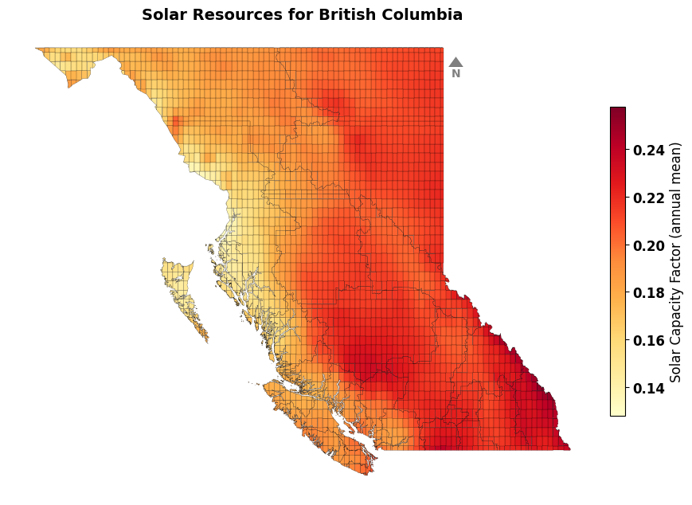
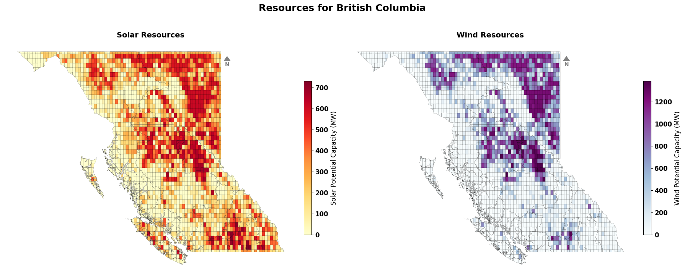
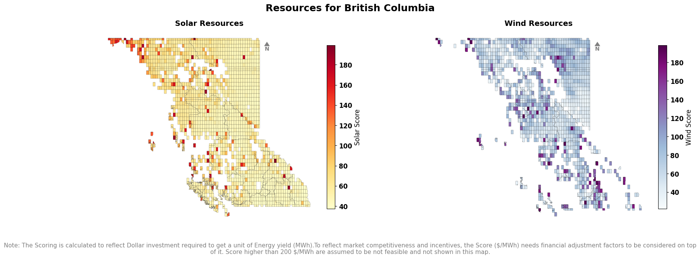
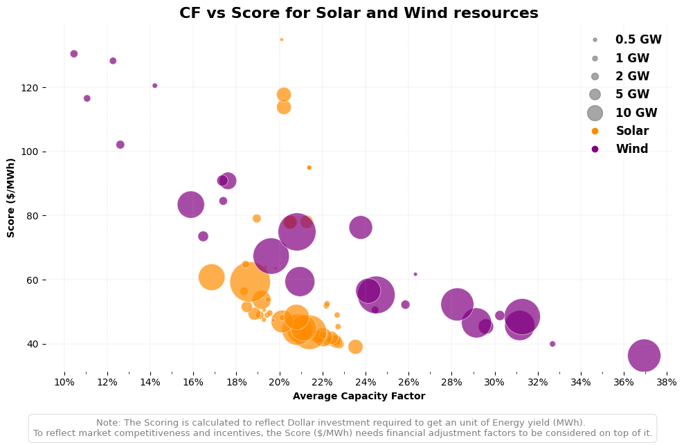
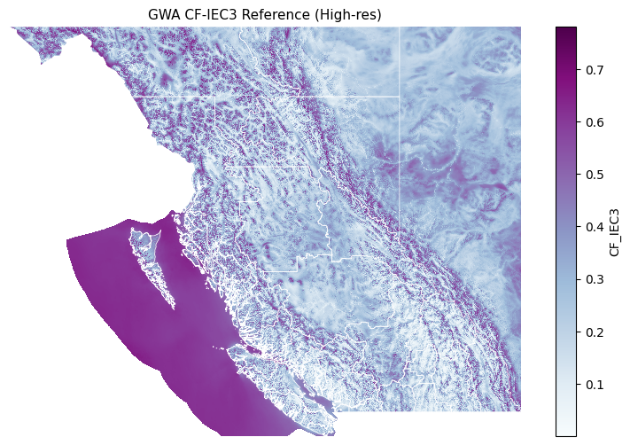
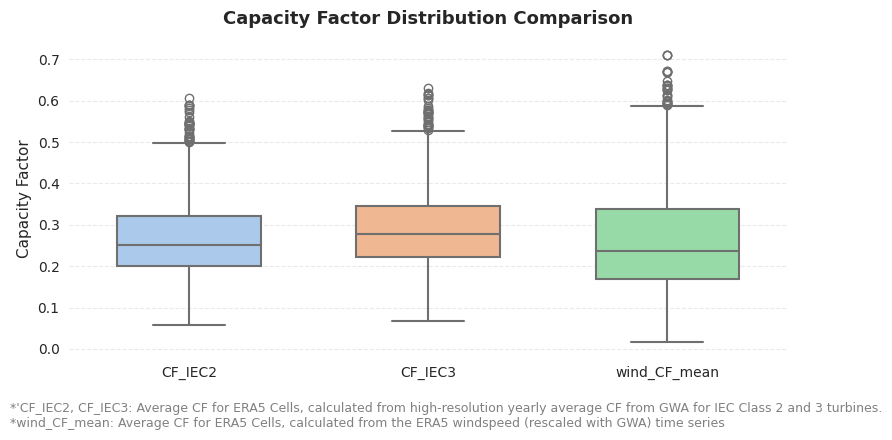
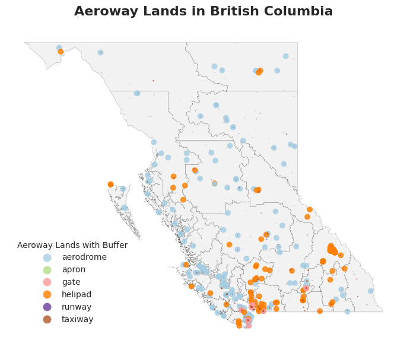
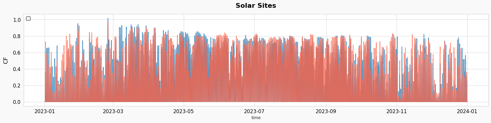

Example Visuals for BC#
load packages
[1]:
from RES.hdf5_handler import DataHandler
import RES.visuals as vis
import RES.utility as utils
import geopandas as gpd
import warnings
# Suppress specific warnings
warnings.filterwarnings("ignore", category=UserWarning)
[2]:
font_family='sans-serif'
Load Config
[4]:
from colorama import Fore, Style
cfg=utils.load_config('../config/config_CAN.yaml')
utils.print_banner(f"Supported Regions for {cfg.get('country')}")
print(Fore.YELLOW + ">> RegionCode: name <<" + Style.RESET_ALL + "\n")
for keys in cfg.get('region_mapping'):
print(f"{keys}: {cfg.get('region_mapping').get(keys).get('name')}")
****************************
Supported Regions for Canada
****************************
>> RegionCode: name <<
AB: Alberta
BC: British Columbia
MB: Manitoba
NB: New Brunswick
NL: Newfoundland and Labrador
NS: Nova Scotia
ON: Ontario
PE: Prince Edward Island
QC: Québec
SK: Saskatchewan
Set Region
[5]:
# The tool is designed to work for WB6 regions
region_code='BC'
region_name=cfg.get('region_mapping').get(region_code).get('name') # type: ignore
utils.print_banner(f"Selected Region: {region_name} ({region_code})")
**************************************
Selected Region: British Columbia (BC)
**************************************
Load store (hdf5 file)
[6]:
store=f"./data/store/resources_{region_code}.h5"
utils.print_banner(f"Store loaded for {region_name} ({region_code})")
res_data=DataHandler(store) # the DataHandler object could be initiated without the store definition as well.
res_data.show_tree(store)
**************************************
Store loaded for British Columbia (BC)
**************************************
─> RES.hdf5_handler| ❌ Error reading file: [Errno 2] Unable to synchronously open file (unable to open file: name = './data/store/resources_BC.h5', errno = 2, error message = 'No such file or directory', flags = 0, o_flags = 0)
Load dataframes from Store#
[ ]:
# Loading dataframes
cells=res_data.from_store('cells')
boundary=res_data.from_store('boundary')
lines=res_data.from_store('lines')
ss=res_data.from_store('substations')
timeseries_clusters_solar=res_data.from_store('timeseries/clusters/solar')
timeseries_clusters_wind=res_data.from_store('timeseries/clusters/wind')
clusters_solar=res_data.from_store('clusters/solar')
clusters_wind=res_data.from_store('clusters/wind')
Create Visuals#
Grid#
[ ]:
# for columns in lines.columns:
# print(f"{columns}")
lines#
[ ]:
vis.plot_grid_lines(
region_code=region_code,
region_name=region_name,
lines=lines,
boundary=boundary,
save_to=f"vis/{region_code}",
font_family=font_family,
show=True
)
└> Transmission Lines for British Columbia saved to vis/BC/transmission_lines_BC.png

Substations#
[ ]:
# <code>
Resources#
Capacity Factor Map#
Individual Maps
[ ]:
vis.get_data_in_map_plot(cells=cells,
resource_type='solar',
datafield='CF',
title=f"Solar Resources for {region_name}",
# ax=ax1,
font_family=font_family,
show=False)
└> Please cross check with Solar CF map with GLobal Solar Atlas Data from : https://globalsolaratlas.info/download/country_name
<Axes: title={'center': 'Solar Resources for British Columbia'}>

[ ]:
# vis.get_data_in_map_plot(cells,
# resource_type='wind',
# datafield='CF',
# title=f"Wind Resources for {region_name}",
# # ax=ax1,
# show=False)
Combined Map
[ ]:
import matplotlib.pyplot as plt
fig, (ax1, ax2) = plt.subplots(1, 2, figsize=(18, 8))
fig.suptitle(f"Resources for {region_name}", fontsize=18, fontweight='bold')
vis.get_data_in_map_plot(cells,
resource_type='solar',
datafield='CF',
ax=ax1,
show=False)
vis.get_data_in_map_plot(cells,
resource_type='wind',
datafield='CF',
ax=ax2,
show=False)
plt.tight_layout()
plt.savefig(f"vis/{region_code}/Resources_combined_CF.png", dpi=300, bbox_inches='tight', transparent=False)
└> Please cross check with Solar CF map with GLobal Solar Atlas Data from : https://globalsolaratlas.info/download/country_name

Capacity#
[ ]:
# vis.get_data_in_map_plot(cells,
# resource_type='solar',
# datafield='capacity',
# # ax=ax1,
# show=False)
[ ]:
import matplotlib.pyplot as plt
fig, (ax1, ax2) = plt.subplots(1, 2, figsize=(18, 8))
fig.suptitle(f"Resources for {region_name}", fontsize=18, fontweight='bold')
vis.get_data_in_map_plot(cells,
resource_type='solar',
datafield='capacity',
ax=ax1,
show=False)
vis.get_data_in_map_plot(cells,
resource_type='wind',
datafield='capacity',
ax=ax2,
show=False)
plt.tight_layout()
plt.savefig(f"vis/{region_code}/Resources_combined_CAPACITY.png", dpi=300, bbox_inches='tight', transparent=False)
└> Please cross check with Solar CF map with GLobal Solar Atlas Data from : https://globalsolaratlas.info/download/country_name

Score#
[ ]:
# vis.get_data_in_map_plot(cells,
# resource_type='solar',
# datafield='score',
# # ax=ax1,
# show=False)
[ ]:
import matplotlib.pyplot as plt
fig, (ax1, ax2) = plt.subplots(1, 2, figsize=(18, 6))
fig.suptitle(f"Resources for {region_name}", fontsize=18, fontweight='bold')
vis.get_data_in_map_plot(cells,
resource_type='solar',
datafield='score',
ax=ax1,
show=False)
vis.get_data_in_map_plot(cells,
resource_type='wind',
datafield='score',
ax=ax2,
show=False)
fig.text(
0.5, -0.05,
"Note: The Scoring is calculated to reflect Dollar investment required to get a unit of Energy yield (MWh).To reflect market competitiveness and incentives, the Score ($/MWh) needs financial adjustment factors to be considered on top of it. Score higher than 200 $/MWh are assumed to be not feasible and not shown in this map.",
ha='center', va='top', fontsize=11, color='gray',wrap=True,
)
plt.tight_layout()
plt.savefig(f"vis/{region_code}/Resources_combined_SCORE.png", dpi=300, bbox_inches='tight', transparent=False)
└> Please cross check with Solar CF map with GLobal Solar Atlas Data from : https://globalsolaratlas.info/download/country_name

Capacity Plot (bins)#
Not required for now
[ ]:
# import matplotlib.pyplot as plt
# import pandas as pd
# legend_x_ax_offset=1.1
# # Ensure 'Region' is in the columns for both boundary and cells
# # if boundary is not None and ('Region' not in boundary.columns or 'Country' not in boundary.columns):
# # boundary = boundary.reset_index()
# # Assign a number to each region
# # boundary['Region_Number'] = range(1, len(boundary) + 1)
# # Define custom bins and labels for solar and wind capacity
# solar_bins = [0, 100, 200, 300, 500, float('inf')] # Custom ranges
# solar_labels = ['<100','100-200', '200-300', '300-500','>500'] # Labels for legend
# # Define custom bins and labels for solar and wind capacity
# wind_bins = [0, 300, 500, 1000, 2000,3000, float('inf')] # Custom ranges
# wind_labels = ['<300','300-500', '500-1000', '1000-2000','2000-3000', '>3000'] # Labels for legend
# # Categorize potential_capacity_solar and potential_capacity_wind into bins
# clusters_solar['solar_category'] = pd.cut(clusters_solar['potential_capacity'], bins=solar_bins, labels=solar_labels, include_lowest=True)
# clusters_wind['wind_category'] = pd.cut(clusters_wind['potential_capacity'], bins=wind_bins, labels=wind_labels, include_lowest=True)
# # Create figure and axes for side-by-side plotting
# fig, (ax1, ax2) = plt.subplots(figsize=(18, 8), ncols=2)
# fig.suptitle("Potential Sites for Targeted Capacity Investments", fontsize=16,weight='bold')
# # Set axis off for both subplots
# ax1.set_axis_off()
# ax2.set_axis_off()
# # Shadow effect offset
# shadow_offset = 0.01
# # Plot solar map on ax1
# # Add shadow effect for solar map
# boundary.geometry = boundary.geometry.translate(xoff=shadow_offset, yoff=-shadow_offset)
# boundary.plot(ax=ax1, color='None', edgecolor='grey', linewidth=1, alpha=0.7) # Shadow layer
# boundary.geometry = boundary.geometry.translate(xoff=-shadow_offset, yoff=shadow_offset)
# # Plot solar cells
# clusters_solar.plot(column='solar_category', ax=ax1, cmap='Wistia', legend=True,
# legend_kwds={'title': "Solar Capacity (MW)", 'loc': 'upper right','fontsize':12,'bbox_to_anchor':(legend_x_ax_offset,1), 'frameon': False})
# # Plot actual boundary for solar map
# # boundary.plot(ax=ax1, facecolor='none', edgecolor='black', linewidth=0.2, alpha=0.7)
# """
# # Annotate region numbers for solar map
# for idx, row in boundary.iterrows():
# centroid = row.geometry.centroid
# ax1.annotate(f"{row['Region_Number']}",
# xy=(centroid.x, centroid.y),
# ha='center', va='center',
# fontsize=7, color='black',
# bbox=dict(facecolor='white', edgecolor='none', alpha=0.7, boxstyle='round,pad=0.2'))
# """
# # Plot wind map on ax2
# # Add shadow effect for wind map
# boundary.geometry = boundary.geometry.translate(xoff=shadow_offset, yoff=-shadow_offset)
# boundary.plot(ax=ax2, color='None', edgecolor='grey', linewidth=1, alpha=0.7) # Shadow layer
# boundary.geometry = boundary.geometry.translate(xoff=-shadow_offset, yoff=shadow_offset)
# # Plot wind cells
# clusters_wind.plot(column='wind_category', ax=ax2, cmap='summer', legend=True,
# legend_kwds={'title': "Wind Capacity (MW)", 'fontsize':12,'bbox_to_anchor':(legend_x_ax_offset,1), 'frameon': False})
# # Plot actual boundary for wind map
# boundary.plot(ax=ax2, facecolor='none', edgecolor='black', linewidth=0.2, alpha=0.7)
# """
# # Annotate region numbers for wind map
# for idx, row in boundary.iterrows():
# centroid = row.geometry.centroid
# ax2.annotate(f"{row['Region_Number']}",
# xy=(centroid.x, centroid.y),
# ha='center', va='center',
# fontsize=8, color='black',
# bbox=dict(facecolor='white', edgecolor='none', alpha=0.7, boxstyle='round,pad=0.2'))
# """
# # Adjust layout for cleaner appearance
# fig.patch.set_alpha(0) # Make figure background transparent
# plt.tight_layout()
# # Add annotation for solar capacity
# ax1.annotate(f"Targeted Capacity: \n{int(clusters_solar.potential_capacity.sum()/1e3)} GW",
# xy=(1.2, 0.5), xycoords='axes fraction', ha='center',
# fontsize=14, color='black', fontweight='bold')
# # Add annotation for wind capacity
# ax2.annotate(f"Targeted Capacity: \n{int(clusters_wind.potential_capacity.sum()/1e3)} GW",
# xy=(1.2, 0.5), xycoords='axes fraction', ha='center',
# fontsize=14, color='black', fontweight='bold')
# # Show the side-by-side plot
# plt.savefig('vis/solar_wind_capacity_map.png',dpi=300)
# # Add a directional compass (north arrow) to both subplots
# # Use a more standard north arrow style
# vis.add_compass_to_plot(ax1)
# vis.add_compass_to_plot(ax2)
# plt.show()
Not required for now
[ ]:
# import matplotlib.pyplot as plt
# import pandas as pd
# legend_x_ax_offset = 1.1
# shadow_offset = 0.01
# # Create figure and axes
# fig, (ax1, ax2) = plt.subplots(figsize=(18, 8), ncols=2)
# fig.suptitle("Potential Sites for Targeted Capacity Investments", fontsize=16, weight='bold')
# ax1.set_axis_off()
# ax2.set_axis_off()
# # --- Solar Map ---
# boundary.geometry = boundary.geometry.translate(xoff=shadow_offset, yoff=-shadow_offset)
# boundary.plot(ax=ax1, color='None', edgecolor='grey', linewidth=0.2, alpha=0.7)
# boundary.geometry = boundary.geometry.translate(xoff=-shadow_offset, yoff=shadow_offset)
# clusters_solar.plot(
# column='potential_capacity',
# ax=ax1,
# cmap='Wistia',
# legend=True,
# legend_kwds={'label': "Solar Capacity (MW)", 'shrink': 0.7} # valid kwargs for colorbar
# )
# # --- Wind Map ---
# boundary.geometry = boundary.geometry.translate(xoff=shadow_offset, yoff=-shadow_offset)
# boundary.plot(ax=ax2, color='None', edgecolor='grey', linewidth=0.2, alpha=0.7)
# boundary.geometry = boundary.geometry.translate(xoff=-shadow_offset, yoff=shadow_offset)
# clusters_wind.plot(
# column='potential_capacity',
# ax=ax2,
# cmap='summer',
# legend=True,
# legend_kwds={'label': "Wind Capacity (MW)", 'shrink': 0.7}
# )
# boundary.plot(ax=ax2, facecolor='none', edgecolor='black', linewidth=0.2, alpha=0.7)
# # Add capacity annotations
# ax1.annotate(f"Targeted Capacity: \n{int(clusters_solar.potential_capacity.sum()/1e3)} GW",
# xy=(1.2, 0.5), xycoords='axes fraction', ha='center',
# fontsize=14, color='black', fontweight='bold')
# ax2.annotate(f"Targeted Capacity: \n{int(clusters_wind.potential_capacity.sum()/1e3)} GW",
# xy=(1.2, 0.5), xycoords='axes fraction', ha='center',
# fontsize=14, color='black', fontweight='bold')
# fig.patch.set_alpha(0)
# plt.tight_layout()
# plt.savefig('vis/solar_wind_capacity_map.png', dpi=300)
# # Add compass
# vis.add_compass_to_plot(ax1)
# vis.add_compass_to_plot(ax2)
# plt.show()
[ ]:
# Example of correct argument dictionary (if you want to use kwargs)
scatter_plot_args = {
"solar_clusters": clusters_solar,
"wind_clusters": clusters_wind,
"bubbles_GW": [0.5, 1, 2, 5, 10], # bubble sizes in GW
"bubbles_scale": 0.025, #100 times smaller than the original scale
"lcoe_threshold": 150, # LCOE threshold in $/MWh
"font_family":font_family,
"save_to_root": f"vis/{region_code}",
}
# Call the function using the argument dictionary
vis.plot_resources_scatter_metric_combined(**scatter_plot_args)
└> Combined CF vs LCOE plot created and saved to: vis/BC/Resources_CF_vs_LCOE_combined.png

CF checks#
[ ]:
gwa_country_code=cfg.get('region_mapping').get(region_code).get('GWA_country_code')
utils.print_banner(f"GWA Country Code Selected: {gwa_country_code}")
******************************
GWA Country Code Selected: CAN
******************************
Wind#
[ ]:
# Get total bounds from boundary GeoDataFrame
minx, miny, maxx, maxy = boundary.total_bounds
# Create bounding_box_dict with correct keys for downstream use
bounding_box_dict = {
"minx": float(minx),
"miny": float(miny),
"maxx": float(maxx),
"maxy": float(maxy)
}
[ ]:
import rioxarray as rxr
raster_path=f'./data/downloaded_data/GWA/{gwa_country_code}_capacity-factor_IEC3.tif'
gwa_raster_data = (
rxr.open_rasterio(raster_path)
.rio.clip_box(**bounding_box_dict)
.rename('CF_IEC3')
.drop_vars(['band', 'spatial_ref'])
.isel(band=1 if '*Class*' in 'CF_IEC3' else 0) # 'IEC_Class_ExLoads' data is in band 1
)
[ ]:
import matplotlib.pyplot as plt
fig, ax = plt.subplots(figsize=(10, 6))
gwa_raster_data.plot(ax=ax, cmap='BuPu', add_colorbar=True)
boundary.plot(ax=ax, facecolor='none', edgecolor='white', linewidth=0.5)
ax.set_title('GWA CF-IEC3 Reference (High-res)', fontsize=11, fontfamily=font_family)
ax.axis('off')
plt.savefig(f"vis/{region_code}/GWA_CF_IEC3.png", dpi=300, bbox_inches='tight', transparent=False)

[ ]:
columns = ['CF_IEC2', 'CF_IEC3', 'wind_CF_mean']
cells[columns].describe().style.format(precision=2).set_caption("Summary Statistics for GWA CF data and calibrated Wind CF_mean")
| CF_IEC2 | CF_IEC3 | wind_CF_mean | |
|---|---|---|---|
| count | 2948.00 | 2948.00 | 2948.00 |
| mean | 0.26 | 0.29 | 0.26 |
| std | 0.09 | 0.09 | 0.12 |
| min | 0.06 | 0.07 | 0.02 |
| 25% | 0.20 | 0.22 | 0.17 |
| 50% | 0.25 | 0.28 | 0.24 |
| 75% | 0.32 | 0.35 | 0.34 |
| max | 0.61 | 0.63 | 0.71 |
[ ]:
vis.get_CF_wind_check_plot(cells,
gwa_raster_data,
boundary,
region_code,
region_name,
['CF_IEC3', 'wind_CF_mean'],
figure_height=5,
font_family=font_family)
└> Wind CF comparison plot created and saved to: vis/BC/Wind_CF_comparison.png
| CF_IEC3 | wind_CF_mean | |
|---|---|---|
| count | 2948.00 | 2948.00 |
| mean | 0.29 | 0.26 |
| std | 0.09 | 0.12 |
| min | 0.07 | 0.02 |
| 25% | 0.22 | 0.17 |
| 50% | 0.28 | 0.24 |
| 75% | 0.35 | 0.34 |
| max | 0.63 | 0.71 |
[ ]:
import seaborn as sns
import matplotlib.pyplot as plt
from textwrap import fill
# Set a clean and minimal style
sns.set_style("white")
# Initialize the figure
plt.figure(figsize=(8, 4))
plt.rcParams['font.family']=font_family
# Create the boxplot
ax = sns.boxplot(
data=cells[['CF_IEC2', 'CF_IEC3', 'wind_CF_mean']],
palette="pastel",
linewidth=1.5,
width=0.6
)
# Set title and labels
ax.set_title('Capacity Factor Distribution Comparison', fontsize=13, weight='semibold', pad=12)
ax.set_ylabel('Capacity Factor', fontsize=11)
ax.set_xlabel('')
# Tweak tick formatting
ax.tick_params(axis='x', labelsize=10)
ax.tick_params(axis='y', labelsize=10)
# Remove all spines
for spine in ax.spines.values():
spine.set_visible(False)
# Add horizontal grid lines
ax.yaxis.grid(True, linestyle='--', alpha=0.4)
ax.xaxis.grid(False)
plt.figtext(
0.01, -0.08,
"*'CF_IEC2, CF_IEC3: Average CF for ERA5 Cells, calculated from high-resolution yearly average CF from GWA for IEC Class 2 and 3 turbines.\n"
"*wind_CF_mean: Average CF for ERA5 Cells, calculated from the ERA5 windspeed (rescaled with GWA) time series ",
ha='left', fontsize=9, style='normal', fontweight='normal', color='gray'
)
plt.tight_layout()
plt.savefig(f"vis/{region_code}/CF_distribution_comparison.png", dpi=300, bbox_inches='tight', transparent=False)

Solar
CLusters#
[ ]:
clusters_wind_f=clusters_wind[clusters_wind['potential_capacity']>0]
clusters_solar_f=clusters_solar[clusters_solar['potential_capacity']>0]
[ ]:
print(f'Total sites {len(clusters_wind_f)}')
total_capacity=clusters_wind_f.potential_capacity.sum()
print(f'Total Capacity {int(total_capacity/1E3)} GW')
sites=5
top_sites_capacity=clusters_wind_f.head(sites).potential_capacity.sum()
print(f'Top {sites} sites ({round(sites/len(clusters_wind_f)*100)}% site) capacity {int(top_sites_capacity/1E3)} GW ({round(top_sites_capacity/total_capacity*100)}% of total capacity)')
Total sites 56
Total Capacity 663 GW
Top 5 sites (9% site) capacity 136 GW (21% of total capacity)
[ ]:
print(f'Total sites {len(clusters_solar_f)}')
total_capacity=clusters_solar_f.potential_capacity.sum()
print(f'Total Capacity {int(total_capacity/1E3)} GW')
sites=5
top_sites_capacity=clusters_solar_f.head(sites).potential_capacity.sum()
print(f'Top {sites} sites ({round(sites/len(clusters_solar_f)*100)}% site) capacity {int(top_sites_capacity/1E3)} GW ({round(top_sites_capacity/total_capacity*100)}% of total capacity)')
Total sites 82
Total Capacity 517 GW
Top 5 sites (6% site) capacity 19 GW (4% of total capacity)
Static Plots#
[ ]:
aeroway=gpd.read_file(f'./data/downloaded_data/OSM/{region_code}_aeroway.geojson')
/localhome/mei3/miniconda3/envs/RES/lib/python3.12/site-packages/pyogrio/raw.py:196: RuntimeWarning: Several features with id = 1374701 have been found. Altering it to be unique. This warning will not be emitted anymore for this layer
return ogr_read(
[ ]:
import matplotlib.pyplot as plt
plt.rcParams['font.family']=font_family
fig, ax = plt.subplots(figsize=(12, 6))
shadow_offset=0.05
# Plot boundary with subtle shadow effect
boundary.geometry = boundary.geometry.translate(xoff=shadow_offset, yoff=-shadow_offset)
boundary.plot(ax=ax, facecolor='grey', edgecolor='lightgray', linewidth=0.1, alpha=0.1)
boundary.geometry = boundary.geometry.translate(xoff=-shadow_offset, yoff=shadow_offset)
boundary.plot(ax=ax, facecolor='none', edgecolor='k', linewidth=0.1, alpha=1)
# Plot aeroway data
aeroway.plot(
column='aeroway',
ax=ax,
legend=True,
legend_kwds={
'title': "Aeroway Lands with Buffer",
'loc': 'lower left',
'bbox_to_anchor': (0.01, 0.04),
'frameon': False
},
alpha=0.8,
cmap='Paired'
)
# Clean up plot
ax.set_title(f"Aeroway Lands in {region_name}", fontsize=16, fontweight='bold', pad=15)
ax.axis('off')
plt.tight_layout()
plt.savefig(f'vis/{region_code}/misc/Aeroway_{region_name}.png', dpi=300)
plt.show()

[ ]:
import matplotlib.pyplot as plt
import seaborn as sns
# Set Seaborn style for better aesthetics
sns.set_style("whitegrid")
# Create figure
fig, ax = plt.subplots(figsize=(20, 4), facecolor="#f9f9f9") # Light background
plt.rcParams['font.family']=font_family
# Define custom colors
colors = ['#1f77b4', '#ff6347']
# Plot using Seaborn
sns.lineplot(data=timeseries_clusters_solar, x=timeseries_clusters_solar.index, y=timeseries_clusters_solar.iloc[:, 0], ax=ax, color=colors[0], linewidth=1.5, alpha=0.8, )
sns.lineplot(data=timeseries_clusters_solar, x=timeseries_clusters_solar.index, y=timeseries_clusters_solar.iloc[:, 1], ax=ax, color=colors[1], linewidth=1.5, alpha=0.8,)
# Enhance aesthetics
ax.set_facecolor("#ffffff") # Pure white plot area
ax.grid(True, linestyle="--", linewidth=0.6, alpha=0.6, color="gray")
# Labels & title
ax.set_title("Solar Sites", fontsize=16, color="black", fontweight="bold", pad=15)
# ax.set_xlabel("Time", fontsize=14, color="black", labelpad=10)
ax.set_ylabel("CF", fontsize=14, color="black", labelpad=10)
# Customize ticks
ax.tick_params(axis='x', colors="black", labelsize=12)
ax.tick_params(axis='y', colors="black", labelsize=12)
# Add a legend
ax.legend(facecolor="#f0f0f0", edgecolor="black", fontsize=12, loc="upper left", frameon=True)
# Show plot
plt.show()

[ ]:
# import matplotlib.pyplot as plt
# import seaborn as sns
# # Set Seaborn style for better aesthetics
# sns.set_style("whitegrid")
# # Create figure
# fig, ax = plt.subplots(figsize=(20, 4.5), facecolor="#f9f9f9") # Light background
# # Define custom colors
# colors = ['#1f77b4', '#ff6347']
# # Plot using Seaborn
# sns.lineplot(data=timeseries_clusters_wind, x=timeseries_clusters_wind.index, y='Capital_1', ax=ax, color=colors[0], linewidth=1.5, alpha=0.8, label="Capital 1")
# sns.lineplot(data=timeseries_clusters_wind, x=timeseries_clusters_wind.index, y='PeaceRiver_1', ax=ax, color=colors[1], linewidth=1.5, alpha=0.8, label="Peace River 1")
# # Enhance aesthetics
# ax.set_facecolor("#ffffff") # Pure white plot area
# ax.grid(True, linestyle="--", linewidth=0.6, alpha=0.6, color="gray")
# # Labels & title
# ax.set_title("Wind Sites", fontsize=16, color="black", fontweight="bold", pad=15)
# # ax.set_xlabel("Time", fontsize=14, color="black", labelpad=10)
# ax.set_ylabel("CF", fontsize=14, color="black", labelpad=10)
# # Customize ticks
# ax.tick_params(axis='x', colors="black", labelsize=12)
# ax.tick_params(axis='y', colors="black", labelsize=12)
# # Add a legend
# ax.legend(facecolor="#f0f0f0", edgecolor="black", fontsize=12, loc="upper left", frameon=True)
# # Show plot
# plt.show()
Static Data Visuals in Interactive Maps#
[ ]:
"""
import hvplot.pandas
import holoviews as hv
from holoviews import opts
from bokeh.layouts import gridplot
from bokeh.io import show
# Initialize Holoviews extension
hv.extension('bokeh')
# Define a dictionary to map columns to specific colormaps
cmap_mapping = {
'lcoe_wind': 'cool',
'potential_capacity_wind': 'Blues',
'lcoe_solar': 'autumn',
'CF_IEC2': 'RdYlGn',
'wind_CF_mean': 'RdYlGn',
'windspeed_ERA5': 'winter',
'nearest_station_distance_km': 'Oranges',
'potential_capacity_wind': 'Blues',
'potential_capacity_solar': 'Oranges',
}
# Define a function to create individual plots
def create_plot(column_name, cmap):
return cells.hvplot(
color=column_name,
cmap=cmap,
geo=True,
tiles='CartoDark', # Default base map
frame_width=300, # Adjust the size of the plots
frame_height=300, # Adjust the size of the plots
data_aspect=.5,
alpha=0.8,
line_color='None',
line_width=0.1,
hover_line_color='red'
).opts(title=column_name,
show_grid=True,
show_legend=True,
tools=['hover', 'pan', 'wheel_zoom','reset','box_select'],
legend_position='top_right'
)
# Create a list of plots for each column
plots = [create_plot(col, cmap) for col, cmap in cmap_mapping.items()]
# Create a grid layout for the plots
grid = hv.Layout(plots).cols(3) # Adjust the number of columns as needed
# Show the layout
hv.save(grid, 'docs/grid_plots.html') # Save the grid layout as an HTML file
# Render the layout as a Bokeh object
bokeh_layout = hv.render(grid, backend='bokeh')
# Show the layout
show(bokeh_layout)
"""
"\nimport hvplot.pandas\nimport holoviews as hv\nfrom holoviews import opts\nfrom bokeh.layouts import gridplot\nfrom bokeh.io import show\n\n# Initialize Holoviews extension\nhv.extension('bokeh')\n\n\n# Define a dictionary to map columns to specific colormaps\ncmap_mapping = {\n 'lcoe_wind': 'cool',\n 'potential_capacity_wind': 'Blues',\n 'lcoe_solar': 'autumn',\n 'CF_IEC2': 'RdYlGn',\n 'wind_CF_mean': 'RdYlGn',\n 'windspeed_ERA5': 'winter',\n 'nearest_station_distance_km': 'Oranges',\n 'potential_capacity_wind': 'Blues',\n 'potential_capacity_solar': 'Oranges',\n}\n\n# Define a function to create individual plots\ndef create_plot(column_name, cmap):\n return cells.hvplot(\n color=column_name,\n cmap=cmap,\n geo=True,\n tiles='CartoDark', # Default base map\n frame_width=300, # Adjust the size of the plots\n frame_height=300, # Adjust the size of the plots\n data_aspect=.5,\n alpha=0.8,\n line_color='None',\n line_width=0.1,\n hover_line_color='red'\n ).opts(title=column_name,\n show_grid=True,\n show_legend=True,\n tools=['hover', 'pan', 'wheel_zoom','reset','box_select'],\n legend_position='top_right'\n )\n\n# Create a list of plots for each column\nplots = [create_plot(col, cmap) for col, cmap in cmap_mapping.items()]\n\n# Create a grid layout for the plots\ngrid = hv.Layout(plots).cols(3) # Adjust the number of columns as needed\n\n# Show the layout\nhv.save(grid, 'docs/grid_plots.html') # Save the grid layout as an HTML file\n\n\n\n# Render the layout as a Bokeh object\nbokeh_layout = hv.render(grid, backend='bokeh')\n\n# Show the layout\nshow(bokeh_layout)\n"
Timeseries Plots#
[ ]:
# import pandas as pd
# import hvplot.pandas
# import panel as pn
# import random
# # Initialize Panel with the dark theme
# pn.extension(theme='default')
# # Load your DataFrames
# df_solar = timeseries_clusters_solar # Your solar DataFrame
# df_wind = timeseries_clusters_wind # Your wind DataFrame
# # Create a list of the column names for the dropdowns
# solar_options = df_solar.columns.tolist()
# wind_options = df_wind.columns.tolist()
# # Function to generate a random vibrant color
# def get_random_vibrant_color():
# return "#{:02x}{:02x}{:02x}".format(random.randint(150, 255), random.randint(150, 255), random.randint(150, 255))
# # Create a function to update the solar plot based on the selected time series
# def update_solar_plot(selected_series):
# return df_solar[selected_series].hvplot.line(
# title=f"Time Series - Solar: {selected_series}",
# xlabel="DateTime",
# ylabel="Value",
# legend='top_left',
# width=1000, # Width of the plot
# height=200, # Height of the plot
# tools=['hover'], # Enable hover tool
# line_color=get_random_vibrant_color() # Random vibrant color for the solar plot
# )
# # Create a function to update the wind plot based on the selected time series
# def update_wind_plot(selected_series):
# return df_wind[selected_series].hvplot.line(
# title=f"Time Series - Wind: {selected_series}",
# xlabel="DateTime",
# ylabel="Value",
# legend='top_left',
# width=1000, # Width of the plot
# height=200, # Height of the plot
# tools=['hover'], # Enable hover tool
# line_color=get_random_vibrant_color() # Random vibrant color for the wind plot
# )
# # Create dropdown widgets for selecting the time series
# solar_dropdown = pn.widgets.Select(name='Select Solar Time Series', options=solar_options)
# wind_dropdown = pn.widgets.Select(name='Select Wind Time Series', options=wind_options)
# # Create dynamic panels that update the plot based on the dropdown selections
# dynamic_solar_plot = pn.bind(update_solar_plot, selected_series=solar_dropdown)
# dynamic_wind_plot = pn.bind(update_wind_plot, selected_series=wind_dropdown)
# # Create a layout with the dropdowns and the plots in a two-row grid
# grid_layout = pn.Column(
# solar_dropdown, dynamic_solar_plot, # Solar plot in the first row
# wind_dropdown, dynamic_wind_plot # Wind plot in the second row
# )
# # Save the grid layout as an HTML file
# grid_layout.save('../docs/time_series_plots.html')
# # Display the panel in a notebook or in a web application
# grid_layout.show()
[ ]:
# import pandas as pd
# import hvplot.pandas
# import panel as pn
# import random
# # Initialize Panel with the dark theme
# pn.extension(theme='default')
# # Load your DataFrames
# df_solar = timeseries_clusters_solar # Your solar DataFrame
# df_wind = timeseries_clusters_wind # Your wind DataFrame
# clusters_solar = clusters_solar # Your clusters_solar DataFrame
# # Create a list of the column names for the dropdowns
# solar_options = df_solar.columns.tolist()
# wind_options = df_wind.columns.tolist()
# # Function to generate a random vibrant color
# def get_random_vibrant_color():
# return "#{:02x}{:02x}{:02x}".format(random.randint(150, 255), random.randint(150, 255), random.randint(150, 255))
# # Create a function to update the solar plot based on the selected time series
# def update_solar_plot(selected_series):
# return df_solar[selected_series].hvplot.line(
# title=f"Time Series - Solar: {selected_series}",
# xlabel="DateTime",
# ylabel="Value",
# legend='top_left',
# width=1000, # Width of the plot
# height=300, # Increased height for better visibility
# tools=['hover'], # Enable hover tool
# line_color=get_random_vibrant_color(), # Random vibrant color for the solar plot
# line_width=2, # Make line thicker for better visibility
# fontsize={'title': 16, 'xlabel': 14, 'ylabel': 14, 'legend': 12}, # Adjust font sizes
# )
# # Create a function to update the wind plot based on the selected time series
# def update_wind_plot(selected_series):
# return df_wind[selected_series].hvplot.line(
# title=f"Time Series - Wind: {selected_series}",
# xlabel="DateTime",
# ylabel="Value",
# legend='top_left',
# width=1000, # Width of the plot
# height=300, # Increased height for better visibility
# tools=['hover'], # Enable hover tool
# line_color=get_random_vibrant_color(), # Random vibrant color for the wind plot
# line_width=2, # Make line thicker for better visibility
# fontsize={'title': 16, 'xlabel': 14, 'ylabel': 14, 'legend': 12}, # Adjust font sizes
# )
# # Create dropdown widgets for selecting the time series
# solar_dropdown = pn.widgets.Select(name='Select Solar Time Series', options=solar_options, width=300)
# wind_dropdown = pn.widgets.Select(name='Select Wind Time Series', options=wind_options, width=300)
# # Create dynamic panels that update the plot based on the dropdown selections
# dynamic_solar_plot = pn.bind(update_solar_plot, selected_series=solar_dropdown)
# dynamic_wind_plot = pn.bind(update_wind_plot, selected_series=wind_dropdown)
# # Function to get relevant row data from clusters_solar
# def get_cluster_info(selected_series):
# # Use the selected series name to find the relevant row in clusters_solar
# selected_row = clusters_solar.loc[selected_series]
# return selected_row
# # Create a function to update the table based on the selected time series
# def update_cluster_table(selected_series):
# cluster_info = get_cluster_info(selected_series)
# # Drop the geometry column if it exists
# if 'geometry' in cluster_info.index:
# cluster_info = cluster_info.drop('geometry')
# # Return the DataFrame widget without the geometry column
# return pn.widgets.DataFrame(cluster_info.to_frame().T, width=800, height=200)
# # Create dynamic panels for the table
# dynamic_cluster_table = pn.bind(update_cluster_table, selected_series=solar_dropdown)
# # Adjust the overall layout for better alignment and spacing
# grid_layout = pn.Column(
# pn.Row(solar_dropdown, dynamic_solar_plot, align="center"), # Center align solar dropdown and plot
# pn.Row(dynamic_cluster_table), # Show the table below the solar plot
# pn.Row(wind_dropdown, dynamic_wind_plot, align="center"), # Center align wind dropdown and plot
# sizing_mode='stretch_width', # Make layout responsive to different screen sizes
# width=1100, # Set a consistent width for the layout
# height=900 # Adjust height to give more space for plots
# )
# # Save the grid layout as an HTML file
# grid_layout.save('../docs/time_series_plots_with_table.html')
# # Display the panel in a notebook or in a web application
# grid_layout.show()